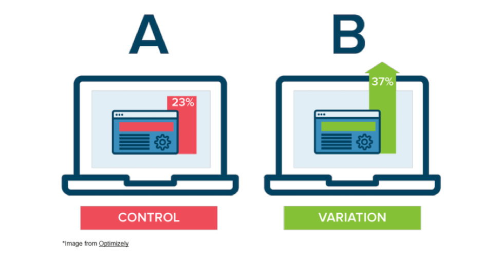
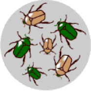
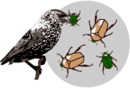
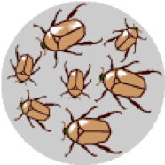
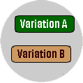
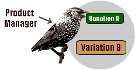
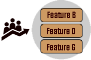

Ok, you’ve probably heard of the term “A/B testing” by now and how important it can be for a product. You probably also know what it means and some product managers have a great understanding of this concept and can use it effectively for their products, but others don’t know how to conduct experiments effectively and interpret their results. If you are in the former group, this post isn’t for you! However, if you are in the latter group of people, you might want to stick around and read the rest of this post as the success of your product and startup might very well depend on it! (okay I’m may be a bit too dramatic here, but seriously you should read this)
Let’s be clear though, if you already have a product with little to no traction, the cure for your product’s misery is likely not A/B testing. It could very well be that the idea is very stupid to begin with for instance, it doesn’t matter if you run a hundred A/B tests for a product that describes itself as Uber for Dog Owners (yes, a startup actually got funded for this and yes it sucked and is still trying to survive), the product just isn’t going to work because it’s a crappy idea to begin to with. If your product isn’t adding any value to users you need to go back to the drawing board, build hypotheses and use the lean startup principles (refer to Eric Ries book) to test out whether your idea or product can actually add value to users. However, if you are somewhat confident that your product is adding value but need to refine and build out new features, than A/B testing is for you!

Let me draw on some personal experience here. When I was working on CardStak, a previous startup of mine, the main goal was to help event goers network efficiently. How? By simply showcasing to attendees who else is attending an event, making recommendation on who to meet and providing real-time messaging between attendees. If you want to know more about CardStak click here.
When we were working to improve CardStak for event-goers, we would brainstorm and prioritize new features based on a) the main vision for the product and b) suggestions we received from users, via surveys and qualitative user interviews. The main metric that was tracked each time CardStak was used for an event was interactions per user per event and the main goal of our tests was to increase this metric. While I knew the technical difficulty of adding features, what surprised me most when testing new features and measuring their success was how popular some features turned out to be despite sounding somewhat trivial beforehand and how lackluster some other features turned out to be despite sounding like great ideas. Let me give you two examples.
One feature on CardStak that was well received during in-person user interviews was allowing attendees to open up their phone during an event and email their contact info (based on their Card on CardStak) to someone else in less than 5 seconds. This feature took roughly one sprint (two weeks) to be created and when put into production code for an event that had more than 500 attendees only one person ended up using it. Needless to say, that the feature was removed shortly after. Another feature that was created was a simple “send hello” button on the bottom of each card. The main idea behind this was to allow users to send quick hellos to others via a single click on the bottom left Hi button on a card. This feature took one day to create and ended up being the second most used feature at each event.
So, where am I going with story. Had we not A/B tested each of these features we not have known
1) how useless the first feature we implemented was
2) how much the send hello feature was important for the users despite being so simple and easy to create
3) which feature to keep and which feature to get rid of
I cannot stress the third point enough because for people who are truly enthusiastic about building a product that people will love, the hardest thing is to get rid of features that you’ve spent weeks or months working on. Without A/B tests you will keep on piling useless features on top of each other to a point that your app will become completely useless. Hence, use A/B tests effectively and often and if a feature isn’t used by your users it shouldn’t stay, get rid of it now! and work on features that can actually add value to your users.
Okay, let’s gets a bit theoretical here and talk about the main idea behind A/B tests and the role of the Product Manager.
Natural Selection and A/B testing
Darwin’s theory of biological evolution states that all species of organisms arise and develop through the natural selection of small, inherited variations that increase the individual's ability to compete, survive, and reproduce. I will argue that a similar theory applies to your startup.
Let’s first examine Natural Selection with an example: A population of beetles:
|
1. There is variation in traits: One of the basic instincts for any creature is to reproduce and after reproduction there will be genetic variation in the offspring. For example, some beetles will be green and some will be brown. |
 |
|
2. There is differential reproduction: Since the environment can't support unlimited population growth, not all individuals get to reproduce to their full potential. In this example, green beetles tend to get eaten by birds and survive to reproduce less often than brown beetles do. |
 |
|
3. There is heredity: The surviving brown beetles have brown baby beetles because this trait has a genetic basis. The more advantageous trait, brown coloration, which allows the beetle to have more offspring, becomes more common in the population. If this process continues, eventually, all individuals in the population will be brown. |
 |
If you have variation, differential reproduction, and heredity, you will have evolution by natural selection as an outcome. Now let’s re-examine how this would apply to A/B testing:
|
1. Variants of a product created:: A change in the layout or an addition of a feature in the product is tested by simultaneously showing the current version of the product without any changes to one group of users while a new version of the product with the change (new feature/layout) is served to another group of users. In the meantime user interactions and other metrics for each Variant is tracked and recorded. |
 |
|
2. Impact of changes are assessed: After enough data is available to assess whether the change in the product resulted in increasing specific metrics or not, the Product Manager either decides that the change has not made a significant difference and gets rid of the change or, the Product Manager decides to keep the change in the product and rollout to all users. |
 |
|
3. Product is continuously improved: The product manager only makes changes that increase key product metrics (such as clicks, purchases or average time spent on page). This will result in continuous product improvement and better product market fit over time. |
 |
Similar to natural selection, if you have variations, statistically significant A/B test results, and continuous product improvements your product will be able to evolve and become competitive. The only difference between Natural Selection and A/B testing is the key role the Product Manager plays in developing the variations and assessing test results as these steps in the process don’t happen naturally, as is the case in Natural Selection.
The simple math behind A/B tests
I read about startups, new products and entrepreneurs daily but the most amazing startup success story I’ve heard that very few people (outside Vancouver) know about is regarding a dating app named Plenty of Fish. If you check out the website (http://www.pof.com) it honestly looks like the website was designed by a 12 year who is building his first site and just getting to know CSS, but what blew me away was that POF was sold for $575 million in cash to Match Group (the parent company of Match, Tinder and OkCupid) a subsidiary of IAC in 2015. The crazy thing about this is story is that the founder, Markus Frind, kept 100% of $575 million from the sale. This means he had no other co-founders, investors, advisors or anyone else take equity from his company prior to the sale.
POF started when Markus Frind was looking to build his portfolio and get a job. He was thinking of something to build that would impress employers and he thought building a dating app would be quite difficult at the time so he built one to wow potential employer but to his surprise he started getting a significant number of signups so he decided to work on his app full-time. As Markus recalls during interviews he already had millions in the bank before he hired his first employee. But what I think should be a great lesson to all, especially Product Managers, is his approach toward improving his product. Watch this clip below and listen to how he thinks about A/B testing:
Let’s go over the math:
- Assume you can test out 25 new features in a year
- Only 20% of your new features will demonstrate better results in A/B tests
- The new features will result in an average 15% improvement in key metrics
At first glance the 20% success rate of new features and 15% improvement seem quite low but let’s do the math. Out of 25 new features that you can release on an annual basis, only 20% will demonstrate better results so that means, 5 better features. Each new feature will improve the product by 15% and 1.15 to the power of 5 is equal to 2 which means you can enhance your key metrics (such as revenue) by 100% every year i.e. double your revenue on an annual basis, by proper split testing.
Assessing A/B test results (via Python)
If you are running A/B tests without usage of dedicated testing tools and you are capturing the data via Ajax calls to your backend, you can use T-Test and P-Values to determine whether the improvement in your metrics is statistically significant or not.
Let's say we're running an A/B test. We'll fabricate some data that randomly assigns of signups per day (over a span of 5 days) in sets A and B, with B being 7% higher than A:
import numpy as np from scipy import stats # 5 data points within a random normal distribution # with mean of 1000 and standard deviation of 100 A = np.random.normal(1000.0, 100.0, 5) # 5 data points within a random normal distribution # with mean of 1070 and standard deviation of 100 B = np.random.normal(1070.0, 100.0, 5) stats.ttest_ind(A, B)
The output will be
Ttest_indResult(statistic=-1.3928499407038424,
pvalue=0.20115149143640312)
So you basically get a low t-statistic and relatively high P-value. The t-statistic is a measure of the difference between the two sets expressed in units of standard error. A high (Absolute) t value means there's probably a real difference between the two sets; you have "significance". The P-value is a measure of the probability of an observation lying at extreme t-values; so a low p-value also implies "significance." In the real world, statisticians seem to put more weight on the p-value result and a p-value less than 0.05 typically implies statistical significance i.e. For a considerable difference between the split test you want a P value less than 0.05.
As you can see with 5 days we saw a P-value of 0.2 which is not below 0.05 hence either the difference in signups was not noticeable or we didn’t collect enough data. Now we run the test for 10 days instead of 5 days
import numpy as np from scipy import stats # 10 data points within a random normal distribution # with mean of 1000 and standard deviation of 100 A = np.random.normal(1000.0, 100.0, 10) # 10 data points within a random normal distribution # with mean of 1070 and standard deviation of 100 B = np.random.normal(1070.0, 100.0, 10) stats.ttest_ind(A, B)
The output will be
Ttest_indResult(statistic=-2.6721683894982498,
pvalue=0.015542552390895172)
Now, our t-statistic is higher and our p-value is below 0.05 hence we can can conclude that there is a statistically significant increase in the number of signups and Version B of the product is clearly better than Version A.
Some useful tools for A/B testing
If you are testing landing pages for your startup I would recommend using Unbounce but if you are looking for more customization I would recommend using Optimizely to run A/B tests for your product.